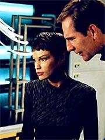
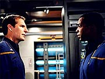
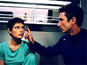

|
MANCHETE
DO EPISDIO
Segmento
reproduz velha premissa
de possesso sem muito destaque
Episdio
anterior | Prximo
episdio
Sinopse:
A Enterprise encontra uma nave imensa no espao. Antes que a tripulao possa reagir, os motores e as armas so desativados e a nave terrestre literalmente engolida pelo gigantesco veculo aliengena. As tentativas de contato falham e Archer decide investigar pessoalmente, conduzindo uma caminhada espacial na superfcie interior da nave.
A bordo de um Shuttlepod, Archer, Reed e Trip vo at a superfcie da nave, de onde podem observar alguns glbulos luminosos aparentemente vivos, apesar da falta de comunicao. Eles notam que boa parte dos glbulos comea a se aglomerar em torno da Enterprise. Antes que possam fazer algo, entretanto, Trip invadido por um deles, o que faz com que outro, semelhante, deixe o corpo do engenheiro.
Chocado, Archer tenta falar com Trip, mas o oficial est catatnico. Pouco depois, o glbulo original deixa o corpo de Trip e o que havia sado retorna. Nesse ponto, o capito decide voltar imediatamente Enterprise, preocupado com a sade de seu amigo. No retorno, Phlox faz algumas checagens, mas o engenheiro parece bem.
Archer diz que gostaria de mant-lo sob observao, mas no pode se dar a esse luxo -- precisa dele para recolocar os motores da Enterprise de volta ativa o mais rpido possvel. Trip segue essas ordens, complementando que est bem e que passou por uma experincia incrvel -- enquanto foi "invadido" pelo glbulo luminoso, sentiu-se como se estivesse em uma praia que costumava visitar antigamente, na Flrida.
Pouco depois de reiniciar os trabalhos na engenharia, Trip volta a ser invadido por um glbulo luminoso. Ele imediatamente larga o que estava fazendo, para a surpresa de um de seus oficiais subalternos, e parte para o refeitrio. Esse tripulante informa ponte a condio do engenheiro-chefe. Archer e T'Pol descobrem Trip comendo como um gluto e sabem que o corpo dele est tomado por outra conscincia.
 Esse "Trip" diz ao capito que eles so exploradores, com fins pacficos, e querem apenas experimentar a vida corprea por algum tempo, para aprender. Ele diz que sua espcie h muito foi corprea, mas agora consiste em energia pura. Graas compatibilidade com os humanos, podem aprender como seus ancestrais viviam. Archer pergunta pelo verdadeiro Trip, e o aliengena diz que seu amigo est experimentando coisas igualmente incrveis, ao realizar o que ele chama de "a travessia". Apesar disso, Archer no quer saber de brincadeira e ordena que seu engenheiro seja devolvido e a Enterprise, libertada.
O aliengena concorda, mas sugere ao capito que abra a mente para novas possibilidades. Archer, entretanto, est impassvel. Com a Enterprise libertada e Trip de volta, ele continua insistindo em reparar a nave e partir o mais rpido possvel, apesar dos insistentes argumentos de T'Pol em favor dos aliengenas.
No demora muito e os instintos de Archer se provam corretos. Um dos glbulos luminosos tenta invadir Phlox e s no consegue em razo da incompatibilidade com a fisiologia Denobulana. O capito informado do ocorrido, mas logo outros tripulantes so tomados. O primeiro deles Malcolm Reed, que comea a agir estranhamente e tenta verificar as "diferenas anatmicas" entre homens e mulheres com dois "espcimes" da nave, o segundo deles T'Pol.
Archer insiste para que Reed seja libertado, e quando seu desejo no satisfeito, ele decide colocar o oficial de armamentos em isolamento em seus alojamentos. Mas a onda de invases continua, at que Mayweather perseguido por um dos glbulos luminosos e descobre que eles no podem entrar na "passarela", regio localizada nas naceles de dobra.
O capito ento ordena que T'Pol prepare-se para deslocar toda a tripulao para a passarela de estibordo, enquanto eles elaboram um plano para recuperar os oficiais "possudos" e deixar aquela regio. A Vulcana sugere que a nica maneira de contra-atacar descobrir os planos dos aliengenas. Para isso, ela prope se submeter a uma tentativa de invaso -- ela acredita que, com sua disciplina mental, pode ser capaz de manter sua mente sob controle, tendo ainda algum acesso aos pensamentos aliengenas.
Aps alguns protestos, Archer concorda. T'Pol tem sucesso em sua tentativa e descobre que os aliengenas na verdade esto numa nave condenada. Eles esto vagando pelo Universo procura de corpos que possam ocupar para escapar de seu veculo moribundo, uma vez que no podem ser diretamente expostos ao espao por muito tempo. Diante disso, surge a idia de "expulsar" os aliengenas asfixiando os corpos dos oficiais possudos.
 O nico homem disponvel para executar os procedimentos necessrios Phlox, que est na enfermaria e imune a "invases". Ele chega a atender um "chamado" de Hoshi, que est sob controle aliengena, mas supostamente teria sido "danificada" -- quebrado uma perna. Tudo no passa de uma armadilha, mas ele consegue neutralizar a ao da oficial possuda e receber as instrues para liberar dixido de carbono por toda a nave e expulsar os invasores.
Archer transmite as informaes remotamente para Phlox, que usa um traje de atividade extra-veicular para evitar ser afetado pela perda de ar a bordo. Mas ambos no contam com a interveno de Trip, que estava possudo e de alguma forma no foi detectado pelo sistema de varredura desenvolvido por T'Pol e Phlox para identificar os "invadidos". Ele sai correndo da Passarela e vai atrs de Phlox. Os dois entram numa briga, mas o mdico consegue venc-la e executar os procedimentos.
Com isso, todos os aliengenas so expulsos e os oficiais voltam ao normal, depois de serem ressuscitados por Phlox. Archer ento ordena que sejam disparados torpedos contra a nave dos invasores, que destruda pelo impacto, neutralizando definitivamente o perigo.
Comentrios:
"The Crossing" mais uma vez reafirma a natureza de
Enterprise enquanto srie de ao, embora o faa sem inovao ou mesmo um tema original. Esse mesmo episdio j foi visto em
Jornada nas Estrelas antes diversas vezes, e em raras ocasies produziu algo interessante. O nico diferencial deste aqui que ele pressupe ser o "primeiro" dos encontros de oficiais da Frota Estelar com formas de vida aliengenas no-corpreas.
Na verdade, a premissa cozinha dois velhos episdios da Srie Clssica,
"Return to Tomorrow" e "The Lights of Zetar". Enquanto o primeiro ainda manteve certo grau de dignidade e qualidade dramtica (havia um real drama entre os aliengenas que queriam tomar emprestados os corpos de Kirk e cia., supostamente para construir corpos andrides definitivos), o segundo foi catastrfico, por no mostrar motivaes claras nem dar tridimensionalidade aos inimigos.
Infelizmente, "The Crossing" aqui mostra um grau de profundidade mais prximo deste ltimo. A boa notcia que, principalmente em razo de boas atuaes do elenco principal e dos espetaculares efeitos especiais, o segmento acaba se saindo melhor do que o clssico, prejudicado pela baixa tecnologia televisiva da poca.
raro ver um episdio de Enterprise (ou mesmo de Jornada nas
Estrelas) que consiga equilibrar o uso de todos os personagens. Aqui esse tnue equilbrio obtido, mas a um custo -- nenhum dos tripulantes acaba ganhando um real destaque ou desenvolvimento, com todas as atuaes diludas no tempo de tela disponvel.
Talvez o nico personagem a receber um tratamento ligeiramente relevante Phlox, que tem a primeira oportunidade aqui de participar na condio de heri de ao, tendo que imobilizar uma Hoshi possuda em vias de disparar uma pistola de fase contra ele e executando o plano de asfixiar os tripulantes dominados, realizao que exigiu tambm uma briga com um Tucker possudo.
 Archer apresenta tambm os traumas resultantes de seus dois anos no espao enfrentando aliengenas hostis. O capito generoso e ingnuo comea a dar lugar a um lder afiado e desconfiado. Apesar disso, o roteiro exagera um pouco na dose, mostrando um Archer que incapaz de acreditar nas boas intenes de um aliengena, mesmo quando vrios sinais parecem apontar nessa direo. Embora seja uma boa coisa o abandono da personalidade de "escoteiro" dos primeiros episdios da srie, talvez essa transio precise de alguma suavidade. Aqui, em vez de soar como um bem-executado desenvolvimento do personagem, acaba parecendo mais uma convenincia do enredo. De toda maneira, no seria preciso muita reforma para tornar tudo um pouco mais convincente.
Tirando isso, pouco sobra para comentar a respeito dos personagens, ou mesmo do enredo. Claramente, foi um episdio sob medida para economizar em despesas de cenrio e de elenco convidado. As nicas cenas feitas fora da Enterprise foram realizadas com fundo verde, depois substitudas por um ambiente criado em computador.
Talvez esse seja mesmo o maior destaque do episdio. As tomadas da NX-01 sendo "engolida" por essa nave espacial, as cenas da caminhada espacial de Reed, Trip e Archer e as "invases" dos corpos dos tripulantes so apresentadas de forma efetiva e at mesmo empolgante, em alguns casos.
Por outro lado, esse aspecto adrenalina talvez tenha subido demais cabea da produo. O ato final de Archer -- a destruio sumria da nave aliengena, sem choro nem vela -- parece destoar totalmente da tradio de
Jornada nas Estrelas, e nem mesmo com a velha desculpa de que "estamos no sculo 22, e os humanos so menos sensveis e 'evoludos'" possvel contentar aos fs mais apegados filosofia e ideologia da franquia, tal qual foi concebida.
Citaes:
Tucker possudo - "You claim to be an explorer, Captain -- open your mind to new possibilities."
("Voc diz ser um explorador, capito -- abra sua mente para novas possibilidades")
Reed possudo - "You are very beautiful. Are you aware that you are the most attractive woman on board this ship?"
("Voc muito bonita. Est ciente de que voc a mulher mais atraente nesta nave?")
TPol - "Do you think it is appropriate for you to be here at this hour?"
("Voc acha apropriado estar aqui a esta hora?")
Reed possudo - "Would you mind taking off your clothing? I would like to learn more about your anatomy."
("Voc se importaria de tirar suas roupas? Eu gostaria de aprender mais sobre sua anatomia.")
TPol - "Have you been drinking?"
("Voc bebeu?")
Reed possudo - "If we are to engage in mating it would be easier if you disrobed."
("Se vamos iniciar um acasalamento seria mais fcil se voc se despisse.")
Archer - "Start working on a way to find out whos themselves and whos not."
("Comece a trabalhar num jeito de descobrir quem si mesmo e quem no .")
Trivia:
 A verso original do roteiro tinha um personagem chamado de tripulante Rooney. Ele acabou sendo trocado por Rostov, interpretado por Joseph Will, que fez sua terceira apario na srie. Matthew Kaminsky antes interpretou Cunningham, em
"Singularity". Aqui, o nome do tripulante no mencionado, mas provavelmente se trata do mesmo.
A verso original do roteiro tinha um personagem chamado de tripulante Rooney. Ele acabou sendo trocado por Rostov, interpretado por Joseph Will, que fez sua terceira apario na srie. Matthew Kaminsky antes interpretou Cunningham, em
"Singularity". Aqui, o nome do tripulante no mencionado, mas provavelmente se trata do mesmo.
As filmagens principais ocorreram entre os dias 8 e 16 de janeiro de 2003.
Aparentemente, os criadores de Enterprise no concordam na avaliao do resultado final deste episdio. Para Rick Berman,
"The Crossing" era "um episdio de fico cientfica bem pesado com o qual estou muito feliz. Esse o que tem as 'aparies' que vo lembrar as epssoas das [nuvens aliengenas] da
Srie Clssica". J Brannon Braga afirmou, aps a exibio, que "ele no tinha carne suficiente. Teve alguns efeitos legais, mas poderia ter um ritmo melhor e talvez ser sobre alguma coisa. No pareceu ter a profundidade que normalmente procuramos."
Ficha
tcnica:
Histria de Rick Berman & Brannon Braga
& Andre Bormanis
Roteiro de Rick Berman & Brannon Braga
Direo de David Livingston
Exibido em 02/04/2003
Produo:
044
Elenco:
Scott
Bakula como Jonathan Archer
Jolene Blalock como
T'Pol
John Billingsley
como Phlox
Anthony Montgomery
como Travis Mayweather
Connor Trinneer como
Charlie 'Trip' Tucker III
Dominic Keating como
Malcolm Reed
Linda Park como Hoshi Sato
Elenco convidado:
Steven Allerick como Cook
Alexander Chance como tripulante 1
Valerie Ianniello como tripulante mulher
Matthew Kaminsky como tripulante 2
Joseph Will como Rostov
Episdio
anterior | Prximo
episdio
|